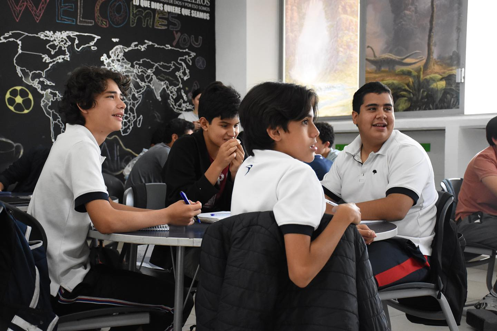
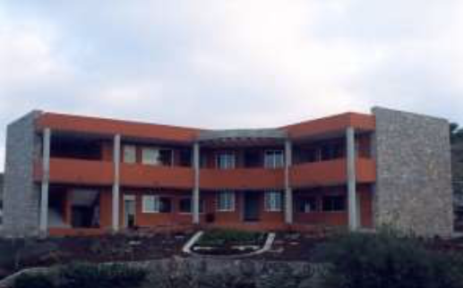

Cuidar el colegio.
Cuidemos nuestro ambiente de estudio!!
es algo sabido que en el Colegio Alamos es normal ver las instalaciones maltratadas o sucias, a muchos incluso ya les parece algo cotidiano encontrar basura en el patio o en sus propios lugares dentro del aula.

aqui hay unos alumnos del colegio alamos.
No podemos permitir que eso siga ocurriendo!!
es escencial asegurarnos de que estas actitudes cambien y impedir que se normalicen.
Por eso mismo Carlo Rodriguez Medina y Mariano Nieto Rougon sugieren:
- Crear una ronda de limpieza<
crear una ronda de limpieza en la que cada casa se encargue de limpiar al menos la terraza o los pasillos para que asi se mantenga la limpieza.
- Colocar mas basureros.
este punto se debe a que de vez en cuanto la gente no tiene basurero cerca y tiene pereza de buscar uno, esto se podria solucionar colocando mas botes de basura, por ejemplo 2 por salon para que asi sea mas facil ubicar donde tirar basura.
